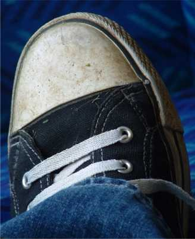

this
is the new look. i have a new camera, 2 new lines and a new haircut, so i guess
i need a new site too. or not, but anyway here it is.
on the right is my left shoe. these shoes cost me 7£. i saw the same shoes,
only with converse written on them for about 30£ so that's a real bargin. i
think you can tell a lot about people from their shoes.
i went to get my new camera today, but i forgot to take my bike lock and the
security guards weren't letting my take my bike into the centre where the camera
shop is. oh and it was tims bike not mine as i wanted to ride park after on a
20in, but don't tell him. so i was stuck outside the shopping centre with my
bike and no way of getting my camera. this story is getting way too long as it
is rubbish, so it ends like this: i left the bike with a guy whose job it is to
open the gate to let people into the pedestrianised area and i though it would
get nicked but it didn't. i was pleased.
i then went to get my hair cut. it was about a foot long and now it's about a
millimetre long. the people in the shop thought it was funny i think
 so
the trails. they are running ok. it's taking some getting used to. tims line is
a bit easier, you just have to pull on the last one. my line you have to race
jump the first and tuck the second and the third gives you a lot of air which is
real fun. i think seb is coming down next week so that will be fun.
so
the trails. they are running ok. it's taking some getting used to. tims line is
a bit easier, you just have to pull on the last one. my line you have to race
jump the first and tuck the second and the third gives you a lot of air which is
real fun. i think seb is coming down next week so that will be fun.
the light in the evenings is not good for photos. look at this one. silly.
oh, the digtrails set 4 is up so go and look at that. it's good, not bland.
i am going to make a few good videos this summer hopefully. i will start with
a little trailer though, which should be up soon.
the background of this site is a bit sucky at the moment but i'll do a new
one.
 tim
broke his bike again. the forks were really cheap and his bike flew and they
bent. i told him to straighten up the bars for this photo, but they already were
straight. not good at all.
tim
broke his bike again. the forks were really cheap and his bike flew and they
bent. i told him to straighten up the bars for this photo, but they already were
straight. not good at all.
on the other hand the new radiohead album is very good. in my opinion.
this summer is looking good at the moment. i've got real trails to ride
right by my house and a few other trips planned. ride all summer...